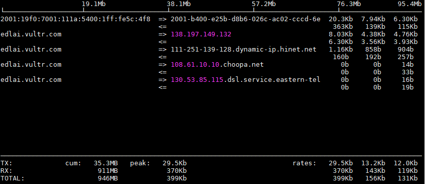

Personal Cloud Recordings
An exercise of an implementation of personal cloud recordings. Recording the streaming from Surveillance Camera via 4G LTE Cellular Network.
Requirements
Hardware
- Platform: MT7688 Target Board
- Webcam: Logitech C270 UVC Webcam
- Cellular: 4G LTE Modem
- Target Device:

Software
Cloud Host
ffmpeg
Target Device
mjpg_streamerin an OpenWRT Linux OS
Background
Topology
---------------------------------
/ Cloud Server (running ffmpeg) /
---------------------------------
/ Cloud Host: [2001:19f0:7001:111a:5400:1ff:fe5c:4f86]
/_____
/
.-~~~-.
.- ~ ~-( )_ _
/ ~ -.
| 4G LTE NW \
\ .'
~- . _____________ . -~
/
/ Target Device: http://[2001:b400:e25b:d8b6:26c:ac02:cccd:6e8f]:8080/?action=stream
----------------------------------
/ IP CAMs (running mjpg-streamer) /
----------------------------------
Running
IPCam Side
- Issue
mjpg_streamercommand and to enable streaming service
# mjpg_streamer -i "/usr/lib/input_uvc.so -d /dev/video0 " -o "/usr/lib/output_http.so -w /www/webcam -p 8080"
MJPG Streamer Version.: 2.0
i: Using V4L2 device.: /dev/video0
i: Desired Resolution: 640 x 480
i: Frames Per Second.: not limited
i: Format............: JPEG
i: TV-Norm...........: DEFAULT
o: www-folder-path...: /www/webcam/
o: HTTP TCP port.....: 8080
o: username:password.: disabled
o: commands..........: enabled
Cloud Server Side
- Install required packages
# apt-get install ffmpeg
# apt-get install iftop # (Optional)
- Issue
ffmpegcommand and point out the IPcam address, system will record the streaming.
# ffmpeg -f mjpeg -r 5 -i "http://[2001:b400:e25b:d8b6:26c:ac02:cccd:6e8f]:8080/?action=stream" -r 5 ./video.avi
ffmpeg version 3.2.10-1~deb9u1 Copyright (c) 2000-2018 the FFmpeg developers
built with gcc 6.3.0 (Debian 6.3.0-18) 20170516
configuration: --prefix=/usr --extra-version='1~deb9u1' --toolchain=hardened --libdir=/usr/lib/x86_64-linux-gnu --incdir=/usr/include/x86_64-linux-gnu --enable-gpl --disable-stripping --enable-avresample --enable-avisynth --enable-gnutls --enable-ladspa --enable-libass --enable-libbluray --enable-libbs2b --enable-libcaca --enable-libcdio --enable-libebur128 --enable-libflite --enable-libfontconfig --enable-libfreetype --enable-libfribidi --enable-libgme --enable-libgsm --enable-libmp3lame --enable-libopenjpeg --enable-libopenmpt --enable-libopus --enable-libpulse --enable-librubberband --enable-libshine --enable-libsnappy --enable-libsoxr --enable-libspeex --enable-libssh --enable-libtheora --enable-libtwolame --enable-libvorbis --enable-libvpx --enable-libwavpack --enable-libwebp --enable-libx265 --enable-libxvid --enable-libzmq --enable-libzvbi --enable-omx --enable-openal --enable-opengl --enable-sdl2 --enable-libdc1394 --enable-libiec61883 --enable-chromaprint --enable-frei0r --enable-libopencv --enable-libx264 --enable-shared
libavutil 55. 34.101 / 55. 34.101
libavcodec 57. 64.101 / 57. 64.101
libavformat 57. 56.101 / 57. 56.101
libavdevice 57. 1.100 / 57. 1.100
libavfilter 6. 65.100 / 6. 65.100
libavresample 3. 1. 0 / 3. 1. 0
libswscale 4. 2.100 / 4. 2.100
libswresample 2. 3.100 / 2. 3.100
libpostproc 54. 1.100 / 54. 1.100
Input #0, mjpeg, from 'http://[2001:b400:e25b:d8b6:26c:ac02:cccd:6e8f]:8080/?action=stream':
Duration: N/A, bitrate: N/A
Stream #0:0: Video: mjpeg, yuvj422p(pc, bt470bg/unknown/unknown), 640x480, 5 tbr, 1200k tbn, 5 tbc
[swscaler @ 0x5636a0d10480] deprecated pixel format used, make sure you did set range correctly
Output #0, avi, to './video1.avi':
- To force the frame rate of the input file (valid for raw formats only) to 5 fps and the frame rate of the output file to 5 fps:
- - i: filename, input file name
- - b: bitrate, Set the video bitrate in bit/s (default = 200 kb/s).
- - vcodec: codec, Force video codec to codec. Use the "copy" special value to tell that the raw codec data must be copied as is.
- - r: fps, Set frame rate (Hz value, fraction or abbreviation), (default = 25).
- - y: Overwrite output files.
for more detail, please check the man page
Observation
Data Usage (iftop) on Cloud Recording Server
-
Package Observation of
iftop -
Observation of
ffmpeg
-
Observation of CPU Usage for VPS, it's around 5%

-
Observation of Disk Operations for VPS

-
Observation of Network Usage for VPS
-
Observation of Price for renting the Cloud Server
- TBD
Advanced
OnViF
Fail-Safe
- The Fail-Safe by SMS
Natted
- For IPv4 Cellular Network (Natted or NAT’d), we can do so via VPN (Virtual Private Server) Network.
Network Remote Management
- Network Management Server can monitor the Package usages of
Cloud ServerandIP CAMs. - If there is any Device which is not working then Supervisor can perform the Fail-Safe (Redundancy) actions
- There is the Recommendation Topology (Ideally) in this case.
---------------------------------------------
/ Network Management Server (NMS) /
---------------------------------------------
/ / NMS: to Monitor Cloud Server and IPCam's actions
/ /
/ /
/ --------------------------------
/ / Cloud Server (running ffmpeg) /
/ --------------------------------
/ / Cloud: [2001:19f0:7001:111a:5400:1ff:fe5c:4f86]
/ /
/ / IPCam: http://[2001:b400:e25b:d8b6:26c:ac02:cccd:6e8f]:8080/?action=stream
------------------------------------------
/ IP CAMs (running mjpg-streamer) /
-------------------------------------------
PlayBack
- Possible to Playback/Play on the WebUI/Screen (2x2 by Bootstrap)
<html> <head> <title>MJPG-Streamer - Stream Example</title> </head> <body> <center> <img src="http://[2001:b011:200b:120c:2e0:4cff:fe00:e1b]:8080/?action=stream" /> </center> </body> </html>
Recognition
-
Export to JPG file pre second man
# ffmpeg -i stream.mp4 -vf fps=1 out%02d.jpg -
Delect the duplication
-
Inmport to Application (LPR or Face recognition)